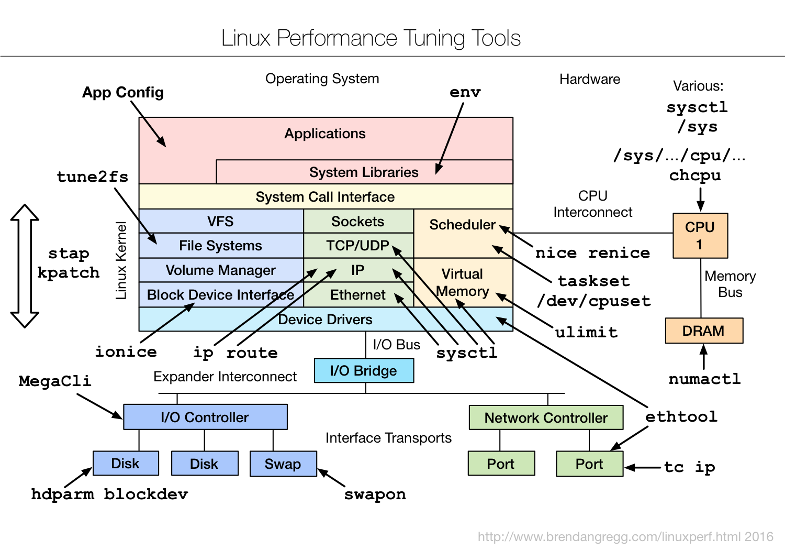

TL;DR — The first three chapters found the bottleneck (observe), checked the config (static), and measured the ceiling (benchmark). Now we change things. Gregg's Tuning Tools map pins a knob to every layer — nice/taskset/numactl for CPU placement, ionice/blockdev for disk, sysctl/tc/ethtool for network, tune2fs for filesystems, ulimit for limits, stap/kpatch for live kernel changes. This chapter walks each, what it changes, and the safe way to apply it. The iron rule of tuning: change one thing, measure, keep it or revert. Never tune blind.
The discipline before the knobs
Tuning is the most dangerous chapter because it's the only one that changes the system. A reckless sysctl can drop your network throughput; a wrong scheduler tweak can starve a process; a bad GRUB change can fail to boot. So the method matters more than the knob list:
- Have a bottleneck. Tune the thing the observability tools (Part 1) flagged — not a random blog's "top 10 sysctls." Untargeted tuning makes things worse as often as better.
- One change at a time. Apply a single knob, benchmark (Part 3), compare to baseline. Two changes = no attribution.
- Make it reversible. Note the old value; test runtime changes before persisting them; keep a known-good boot entry.
- Persist deliberately. Runtime change (
sysctl -w) to test; config file (/etc/sysctl.d/) only once proven.
With that frame, here's the map.

The original — Brendan Gregg's "Linux Performance Tuning Tools" (brendangregg.com, 2016). The simplified diagram below walks it box by box.
Fig 1 — A knob per layer. Most live in sysctl, /sys, or a small CLI; the highest-value ones are CPU placement and the governor.
CPU: placement, priority, governor
The orange scheduler region holds the highest-ROI tuning on the whole map, because where a thread runs and how it's prioritised often matters more than raw clock.
| Tool | What it changes |
|---|---|
nice / renice | process priority (niceness −20..19) — who wins when CPUs are contended |
taskset | CPU affinity — pin a process/thread to specific cores |
/dev/cpuset / cgroups | carve out dedicated CPU sets for a workload (isolate from noise) |
schedtool | set scheduling policy (FIFO/RR realtime, batch, idle) |
chcpu | online/offline CPUs, configure CPU hotplug |
/sys/.../cpufreq | frequency governor — the single biggest latency knob |
The governor first. If Part 2 found powersave, switching to performance is often the largest single win for latency-sensitive work — it stops the cores throttling down between bursts:
# set all cores to performance governor
echo performance | sudo tee /sys/devices/system/cpu/cpu*/cpufreq/scaling_governor
# or via cpupower:
sudo cpupower frequency-set -g performanceThen placement. Pinning a process to cores on one NUMA node (and its memory to the same node) avoids slow cross-node memory access. taskset for CPUs, numactl for CPU+memory together:
taskset -c 0-7 ./app # pin to cores 0-7
numactl --cpunodebind=0 --membind=0 ./app # node 0 CPUs + node 0 RAM
renice -n -5 -p <PID> # nudge priority uplscpu/lstopo). Pinning to "cores 0–7" only helps if those cores are actually on one NUMA node — otherwise you've split the process across nodes and made it worse. Inspect, then pin.Memory & NUMA
| Tool | What it changes |
|---|---|
numactl | NUMA memory policy — bind, interleave, preferred node |
ulimit | per-process resource limits — open files, locked memory, stack |
sysctl vm.* | VM behaviour — swappiness, dirty ratios, overcommit, hugepages |
/sys/kernel/mm/transparent_hugepage | THP mode — always/madvise/never |
The memory knobs that matter most for databases:
# discourage swapping hot memory (DB servers: low or 1)
sudo sysctl vm.swappiness=1
# THP off/madvise for Postgres/Redis/Mongo latency
echo madvise | sudo tee /sys/kernel/mm/transparent_hugepage/enabled
# raise open-file limit for connection-heavy services
ulimit -n 1048576 # per shell; persist in limits.conf / systemd
# interleave memory for a throughput job spanning nodes
numactl --interleave=all ./batch_jobulimit -n is the quiet killer: a service that hits the default 1024 file-descriptor limit starts refusing connections under load with cryptic errors, and no CPU/disk graph explains it. Raise it (and persist via systemd LimitNOFILE or limits.conf) for any connection-heavy daemon.
Disk & filesystem
| Tool | What it changes |
|---|---|
ionice | I/O scheduling priority/class — keep a backup from starving the DB |
blockdev | read-ahead and block-size settings per device |
hdparm | drive-level features (write cache, APM) on SATA disks |
tune2fs | ext2/3/4 filesystem parameters — journal mode, reserved blocks, mount opts |
/sys/block/<dev>/queue/scheduler | I/O scheduler — none/mq-deadline/kyber/bfq |
MegaCli / storcli | RAID controller — cache policy, write-back/through |
The I/O scheduler is the common disk tuning. On fast NVMe, none (no reordering) usually wins because the device is faster than the kernel's scheduling logic; on spinning disks or mixed workloads, mq-deadline or bfq helps fairness:
# NVMe: none often best
echo none | sudo tee /sys/block/nvme0n1/queue/scheduler
# read-ahead for sequential workloads (sectors)
sudo blockdev --setra 4096 /dev/nvme0n1
# keep a backup low-priority so it doesn't starve the DB
ionice -c3 -p <backup_pid> # idle I/O class
# ext4: relax journaling for throughput (data integrity trade-off)
sudo tune2fs -o journal_data_writeback /dev/sdb1journal_data_writeback, disabling barriers, or enabling volatile drive write-cache without a BBU can corrupt data on power loss. Know the trade before flipping it on a system holding real data.Network
| Tool | What it changes |
|---|---|
sysctl net.* | TCP/IP stack — buffers, backlog, congestion control, port range |
ethtool | NIC — ring buffers, offloads, coalescing, RSS queues |
tc | traffic control — qdiscs for shaping, prioritisation, fq |
ip route | routing — paths, per-route options, ECMP |
The network sysctls that move the needle for servers:
# bigger connection backlog for accept-heavy services
sudo sysctl net.core.somaxconn=65535
sudo sysctl net.ipv4.tcp_max_syn_backlog=65535
# modern congestion control + fair queueing (great for high-BDP links)
sudo sysctl net.ipv4.tcp_congestion_control=bbr
sudo sysctl net.core.default_qdisc=fq
# larger socket buffers for high-throughput transfers
sudo sysctl net.core.rmem_max=134217728 net.core.wmem_max=134217728
# NIC ring buffers up to reduce drops under burst
sudo ethtool -G eth0 rx 4096 tx 4096somaxconn is the one people miss: the default listen backlog silently caps how many pending connections the kernel queues, so a service under a connection burst drops clients before the app even sees them. BBR congestion control + fq qdisc is a strong default for links with bandwidth-delay product (long-distance replication, cross-region).
Live kernel changes
The syscall band carries the heaviest tools: stap (SystemTap) and kpatch. These change kernel behaviour without a reboot — SystemTap can instrument and even modify kernel paths; kpatch applies live patches to a running kernel (security fixes, behaviour changes) with no downtime. Powerful and risky; reserved for cases where a reboot is unacceptable and you know exactly what you're changing. For most tuning, the sysctl//sys knobs above are enough and far safer.
Application & environment
Top of the map: App Config and env. The biggest wins are often here, not in the kernel — the database's own buffer sizes, the JVM heap and GC flags, the thread-pool sizes, the allocator (LD_PRELOAD=jemalloc). Environment variables tune runtimes (GOMAXPROCS, OMP_NUM_THREADS, MALLOC_ARENA_MAX, OMP_PROC_BIND). Always tune the application config in step with the OS — a perfectly tuned kernel under a database still running default shared_buffers leaves most of the win on the table.
# pin OpenMP threads to cores, sized to a NUMA node
export OMP_NUM_THREADS=8 OMP_PROC_BIND=close OMP_PLACES=cores
# Go: match logical CPUs (or a cpuset)
export GOMAXPROCS=8
# preload a faster allocator
export LD_PRELOAD=/usr/lib/x86_64-linux-gnu/libjemalloc.so.2Making changes stick (and safe)
Runtime changes vanish on reboot — that's a feature while testing, a footgun in production. Once a change is proven:
# persist sysctls
echo 'vm.swappiness=1' | sudo tee /etc/sysctl.d/99-tuning.conf
echo 'net.core.somaxconn=65535' | sudo tee -a /etc/sysctl.d/99-tuning.conf
sudo sysctl --system # apply now, also loads on boot
# persist governor / THP / scheduler: use tuned or a systemd unit, not rc.local
sudo apt install tuned && sudo tuned-adm profile throughput-performancetuned is the right way to ship a coherent set of tuning as a named profile (governor, sysctls, THP, scheduler all together) — far cleaner than a pile of boot scripts. Build a custom org profile that inherits a stock one and overrides specifics; that's the production pattern detailed in the EPYC guide.
Hands-on: apply a knob, measure, keep or revert
Every example follows the iron rule: note the old value, change one thing, measure against baseline, then keep or revert. Test on a non-production box first.
CPU governor — the biggest single win
# baseline: what is it now?
cat /sys/devices/system/cpu/cpu0/cpufreq/scaling_governor # -> powersave
# change all cores to performance
echo performance | sudo tee /sys/devices/system/cpu/cpu*/cpufreq/scaling_governor
# verify it took + see the clock jump
grep MHz /proc/cpuinfo | sort -u | tail -3
sudo turbostat --interval 1 2>/dev/null | grep Bzy_MHz | head -1# before: cores idling at 1500 MHz between bursts
# after: cores holding 3700 MHz — no throttle-down latencyMeasure: re-run your latency benchmark (Part 3); p99 on bursty workloads often drops noticeably. Keep it via tuned (below) so it survives reboot.
NUMA placement — pin CPU and memory together
# baseline: run unpinned, note throughput
./bench
# pin to node 0 CPUs AND node 0 memory (map nodes first: numactl -H)
numactl --cpunodebind=0 --membind=0 ./bench
# verify placement while it runs:
numastat -p $(pgrep bench) # want node0 high, node1 ~0Read it: if numastat showed lots of remote-node memory before and local-only after, you've cut slow cross-node access. Do this: only pin to cores within one node (check lscpu from Part 2) — straddling nodes makes it worse.
Connection backlog — the silent dropper
# symptom: clients get refused under a connection burst, app looks idle
ss -ltn # check Recv-Q vs the listen backlog
sysctl net.core.somaxconn # -> 4096 (default, often too low)
sudo sysctl net.core.somaxconn=65535
sudo sysctl net.ipv4.tcp_max_syn_backlog=65535
# also bump the app's own listen() backlog to matchRead it: a full accept queue means the kernel drops new connections before the app sees them — no CPU/disk graph explains it. Do this: raise both the kernel and the app backlog; re-test the connection storm.
Swappiness + THP — database defaults
sysctl vm.swappiness # -> 60 (too eager for a DB)
sudo sysctl vm.swappiness=1 # discourage swapping hot memory
echo madvise | sudo tee /sys/kernel/mm/transparent_hugepage/enabled
# verify:
cat /sys/kernel/mm/transparent_hugepage/enabled # -> always [madvise] neverMeasure: watch vmstat 1 — so (swap-out) should sit at 0; THP stalls in the DB's latency histogram should disappear.
I/O scheduler — match it to the device
cat /sys/block/nvme0n1/queue/scheduler # -> [mq-deadline] kyber none
# on fast NVMe, 'none' usually wins (device faster than kernel reordering)
echo none | sudo tee /sys/block/nvme0n1/queue/scheduler
# re-run fio (Part 3) and compare IOPS/latency before vs afterFile-descriptor limit — the cryptic refusal
ulimit -n # -> 1024 (default, kills busy daemons)
# per-shell test:
ulimit -n 1048576
# persist for a systemd service:
sudo systemctl edit myapp # add: [Service] LimitNOFILE=1048576Read it: a connection-heavy service hitting 1024 fds starts refusing connections with confusing errors. Do this: raise it and persist via systemd, not just the shell.
Make it stick — ship a tuned profile
# persist sysctls
printf 'vm.swappiness=1\nnet.core.somaxconn=65535\n' | sudo tee /etc/sysctl.d/99-tuning.conf
sudo sysctl --system
# governor/THP/scheduler together, the clean way:
sudo apt install -y tuned
sudo tuned-adm profile throughput-performance
tuned-adm active # confirmDo this: once a set of knobs is proven, ship them as one tuned profile rather than a pile of boot scripts — reproducible across the fleet.
Takeaways
- Tune the bottleneck you found, not a checklist. Tuning without a target is as likely to hurt as help.
- Highest-ROI knobs: CPU governor (performance), NUMA placement (
numactl/taskset),somaxconn,swappiness, THP mode, I/O scheduler,ulimit -n. - One change, measure, keep-or-revert. Benchmark each knob against baseline; two changes = no attribution.
- Mind the trade-offs. Filesystem/write-cache speed often costs durability; realtime priorities can starve other work.
- Tune the app too. Buffer sizes, GC, allocators, thread pools — often a bigger win than any kernel knob. Ship it all as a
tunedprofile.
References
- Brendan Gregg — Linux Performance — source of the Tuning Tools diagram.
- Kernel sysctl documentation — every net/vm/fs/kernel knob.
- tuned — ship coherent tuning profiles.
Extra reads
- AMD EPYC Turin Tuning Guide — every knob here, applied end-to-end on real hardware.
- Part 2 — Static Tools — inspect before you change.
- Part 3 — Benchmark Tools — prove each change helped.
Built from Brendan Gregg's "Linux Performance Tuning Tools" diagram (linuxperf.html, 2016). Tuning changes system behaviour and can degrade or destabilise — test every knob on a non-production box, change one thing at a time, and keep changes reversible. Durability trade-offs are real; know them before flipping write-cache or journaling options.